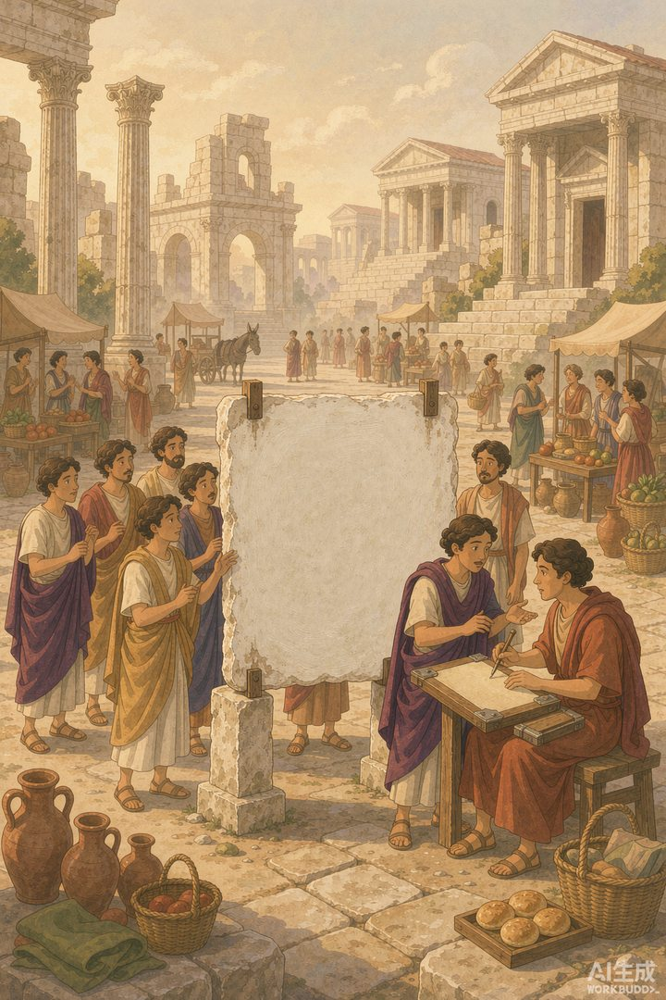
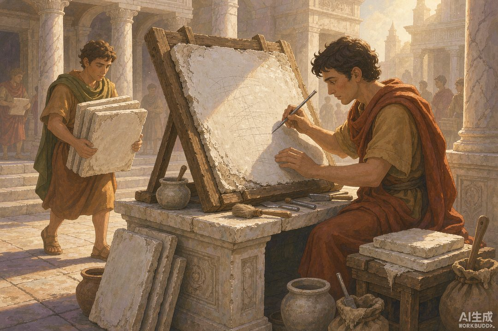
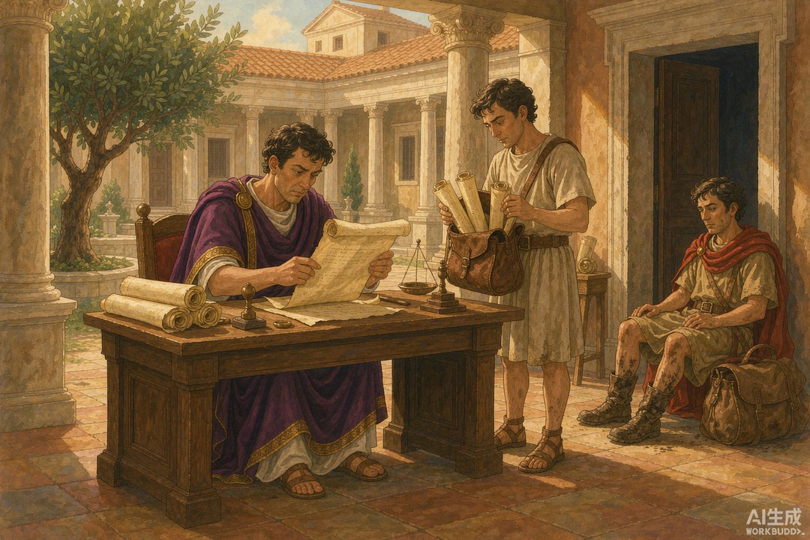

|
《信息传播那些事儿》卷二 · 竹简与封泥 · 第 23 篇 |
|
罗马每日纪闻：刻在白板上的“日报” —— 两千年前的罗马人，已经在追“每日更新”了 |
|
 |
|
罗马广场上那块涂白的木板，就是西方最早的"官方公报"（AI 生成示意图） |
|
上一篇我们站在城门口看汉朝人挂捷报。现在把地球仪转到另一边——罗马广场上，立着一块涂了石膏的白色木板，天天更新，人人可看，一看就是好几百年。它被称为世界上最早的官方公报，报纸的老祖宗。这一篇，我们把它的"版面"打开看看。 |
一 | 一块白板，就是一间阅报室 |
这份公报的名字，本义朴素得可爱：Acta Diurna，拉丁文"每日之事"。罗马人管它的载体叫 Album——一块刷了熟石膏的白木板，公家用尖笔在上面刻写当天的新闻，立在元老院议事厅外和罗马广场这种人流量最大的地方。
它为什么是白色的？因为白底黑字，对比最清楚——两千年前的排版工程师就已经懂了可读性优先。它为什么立在广场？因为那个位置是全城人流的最大公约数，贵族、平民、外乡人、奴隶主、贩夫走卒，谁路过谁就能看。说它是阅报栏的鼻祖，一点不过分。
更让人惊讶的是它的档案意识：一块白板展示几天之后，内容会被撤下，誊抄归档，和其他公文放在一起保存，供日后查证参考。也就是说，罗马人不但做"日报"，还顺手做了"过刊数据库"。可惜的是，这套档案没能活到今天——没有一件原版实物存世。白板本身要反复重写，誊抄本写在昂贵的莎草纸上，两千年岁月一磨，全部归零。今天我们了解它，全靠古典作家的转述。
|
 |
|
每天清晨，公家用尖笔在白板上刻写"今日要闻"（AI 生成示意图） |
二 | 它的“版面”，比你想的还全 |
这份"日报"都登些什么？把史料里提到的内容排一排，你会看到一份惊人齐全的现代报纸结构：
时政版：元老院和公民大会的议事记录、政府政令、皇帝敕令、官员任免；法治版：重大案件的审理过程和判决结果；财经版：各行省上缴国库的钱粮、粮食价格与供应；社会版：本城新生儿和死亡人数、贵族的婚丧嫁娶；体育版：角斗比赛和赛会日程；甚至还有奇闻趣事——有人丢了狗，狗跑了很远自己找回家，也能上"报"。
古罗马作家佩特罗尼乌斯在小说《萨蒂利孔》里，还写过一段对《每日纪闻》的戏仿，让一个书记官一本正经地朗读"当日新闻"：某庄园今日诞生男孩三十人、女孩四十人；四万蒲式耳谷物入仓；五百头牛学会拉犁；某奴隶因辱骂主人被处死；国库今日回收一千万塞斯特斯，因为"找不到投资机会"；庞培花园失火……
政治、法治、财经、民生、体育、奇闻，一板打尽——它不只是"官方文告"，它是人类历史上第一份综合性公报。现代报纸在十九世纪才凑齐的版面结构，罗马人用一块木板，提前试跑了一千八百年。
三 | 行省和军队，都在追更 |
别以为这块白板只服务罗马城。事实上，它真正的读者遍布整个地中海世界。
官方和民间的抄写员会誊抄白板上的内容，加上自己采集的补充消息，通过驿路寄往行省和驻军。行省总督靠它了解首都的政治风向，军团士兵靠它追踪家乡和时局的消息。史学家塔西佗在《编年史》里留下了一个生动的细节：尼禄皇帝与元老特拉塞亚斗法期间，"这份罗马人民的日报，在行省和军队里被加倍仔细地翻阅，人人都想看看特拉塞亚说了什么"。——多典型的"追更"心态。
它的史料价值也实打实：作家苏维托尼乌斯写《十二凯撒传》时，人物的出生日期、事件地点，很多就是从《每日纪闻》的档案里查的。而塔西佗自己还说过一句专业的"体裁划分"：重大事件留给史书，鸡毛蒜皮归日报——历史写作与新闻写作的分界线，两千年前就有人划了。
|
 |
|
罗马来的公报莎草卷，是行省总督每天的第一件事（AI 生成示意图） |
四 | 它公开一切，除了权力想藏的部分 |
最后说说它的出身和结局——这恰恰是它最"政治"的部分。
公元前 59 年，凯撒当上执政官，立刻下令：元老院和公民大会的工作报告，务必每日公布。这不是热爱透明，这是民主派政治家的斗争武器——把元老院贵族们的议事细节摊开在白板上给全罗马看，等于把对手的一举一动置于公众目光之下，为自己争取舆论支持。公开，本身就是攻击。
凯撒遇刺后，他的继承者屋大维（奥古斯都）看懂了这把武器的两面性：继续办《每日纪闻》，因为它是极好的政府宣传渠道；但把元老院会议的细节从公报里拿掉——公开的尺度，从此收归皇帝一人掌握。这份公报就这样断断续续地办着，从共和国办到帝国，一直办到公元 330 年左右君士坦丁迁都，才渐渐落幕。
本篇的知识点，一句话：官方公报是世界上最古老的"报纸形态"，但它从来不是中立的信息管道——公开什么、藏起什么，永远由权力决定。"每日纪闻"教给后世的，除了新闻的形态，还有这条更深的规律。
不过，官方公报再厉害，也只能覆盖官道两侧。真正把欧亚大陆的民间信息缝合起来的，是另一群人——赶着骆驼、驮着丝绸、一路攒情报的商队。下一篇，我们去丝绸之路，会一会那些一边做生意一边传消息的"民间快递"。
本篇数字锚点 |
|
前 59 年 凯撒下令每日公布 |
约 390 年 断续刊布总时长 |
|
|
6 大版 时政/法治/财经/社会/体育/奇闻 |
0 件 存世原版实物数量 |
|
下篇预告 · 第 24 篇 《丝路信使：商队就是移动情报网》——官方的网再密，也有覆盖不到的角落。而商队一边贩丝绸一边贩消息，走到哪，情报就流到哪。贸易路线为什么就是信息路线？骆驼背上见分晓。 |
史料参考：苏维托尼乌斯《十二凯撒传》、塔西佗《编年史》、佩特罗尼乌斯《萨蒂利孔》及 Acta Diurna 相关研究；本文配图为 AI 生成示意图。